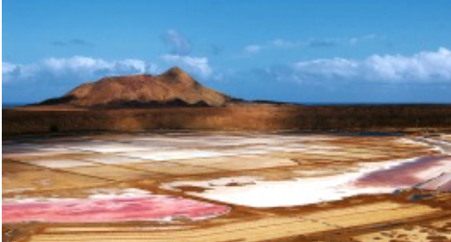
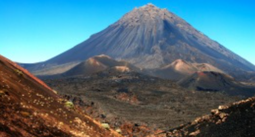
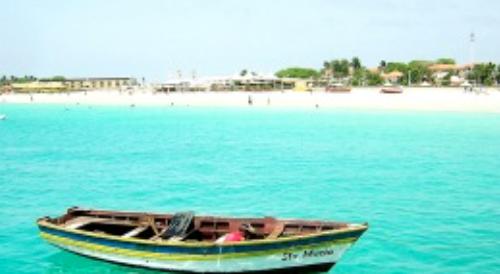

Žaliojo kyšulio – Afrikai artimas salynas Atlanto vandenyne, garsėjantis muzikine kultūra ir kontrastinga gamta. Oficiali kalba – portugalų, valiuta – kapverdo eskudas. Čia galima išvysti Fogo ugnikalnį, smėlėtus Sal paplūdimius ir spalvingą Mindelo miestą. Populiarios veiklos – buriavimas, kalnų žygiai ir atokvėpis prie vandenyno. Kraštovaizdis – nuo vulkaninių kalvų iki sausų dykumų.
Lankytinos vietos

Pedra de Lume
Pedra de Lume - užgesusio vulkano krateris. 1804 metais pastačius dirbtiną tunelį galima patekti į kraterio vidų. Krateris yra jūros lygyje ir nors jūra yra 1 km atstumu, vanduo įstengia prasiskverbti į kraterį.

Pico do Fogo
Pico do Fogo - aukščiausias Cape Verde taškas, iškilęs net 2829 metrus virš jūros lygio. Tai aktyvus ugnikalnis, bet tikrai nepavojingas. Paskutinį kartą jis buvo išsiveržęs 1675-ais metais, sukeldamas masinę emigraciją iš salos.

Praia de Santa Maria
Fantastiško grožio paplūdimys, baltas smėlis ir skaidrus žydras vanduo. Paplūdimys yra didelis, jame nebūna daugybės žmonių, ant prieplaukos žvejoja žvejai. Tikra ramybė! Puiki vieta norintiems pailsėti.